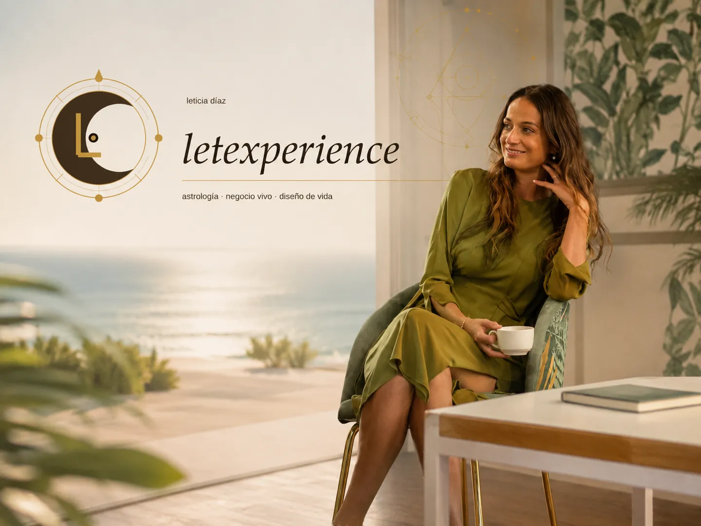
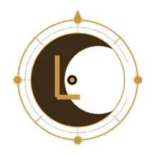

01
Comprender
Reconocer quién eres más allá de lo aprendido: patrones, talentos, necesidades y puntos ciegos.

Astrología psicológica y estrategia vital para comprender quién eres, leer el momento que atraviesas y tomar decisiones que se parezcan más a ti.
“No tienes que elegir entre tu ambición y tu paz.”
Durante años aprendí a leer objetivos, balances y estrategias. Hoy sumo a esa mirada la astrología psicológica para traducir patrones, ciclos y energía disponible en algo mucho más concreto: decisiones.
Reconocer quién eres más allá de lo aprendido: patrones, talentos, necesidades y puntos ciegos.
Convertir la información de tu carta y de tu momento vital en claridad práctica y dirección.
Pasar de entenderte a elegir distinto: relaciones, trabajo, negocio y forma de habitar tu vida.
Elige el punto de entrada que mejor responda a lo que hoy necesitas comprender, ordenar o transformar.
Una inmersión de 90 minutos —y a veces nos vamos a 2 horas— para reconocer los códigos que atraviesan tu identidad, tus vínculos, tu forma de decidir y la manera en la que expresas tu potencial.
Para cuando quieres comprenderte mejor y dejar de repetir respuestas que ya no te representan.
Tres sesiones personalizadas de alto impacto en las que tu carta natal se convierte en una hoja de ruta. Miramos dónde estás, qué te está pidiendo el momento y cómo transformar esa lectura en movimiento real.
Para decisiones, cambios profesionales, negocio, posicionamiento o etapas en las que entender ya no es suficiente.
Una lectura enfocada en el clima simbólico de los próximos doce meses: temas que ganan protagonismo, áreas de crecimiento, tensiones y energía disponible para vivir el año con más consciencia.
Para cumpleaños, cambios de ciclo o momentos en los que necesitas perspectiva sobre lo que se abre.
Una mirada a dos cartas para comprender cómo se encuentran dos maneras de sentir, amar, comunicar y evolucionar. Qué fluye, qué activa al otro y dónde aparece el aprendizaje.
Para parejas, vínculos importantes o relaciones que quieres comprender con más profundidad.
Oráculos y talismanes energéticos para acompañarte, comprenderte y transformar tu vida.
Una carta canalizada para ti, alineada con tu momento actual y tu revolución solar.
Descubrir la carta personal →Comprende la energía que os une, los aprendizajes compartidos y el propósito de vuestra conexión.
Explorar sinastría →Un talismán energético que te acompaña cada mes, anclando intención y protección.
Recibir talismán del mes →
Estudié Administración y Dirección de Empresas y durante diez años mi mundo se midió en balances, objetivos, hojas de cálculo y la seguridad de una carrera en banca.
Por fuera había estructura. Por dentro empezaba a faltar espacio. Mi cambio de rumbo no fue una huida, sino el comienzo de otra forma de entender el éxito.
Dejé la banca, me fui a Oxford a cuidar niños y, entre silencio, meditación y una vida mucho más sencilla, apareció una pregunta que ya no pude ignorar: ¿y si trabajar también pudiera tener sentido?
Desde entonces he ido uniendo mundos que durante años parecían separados: estrategia y sensibilidad, negocio e intuición, estructura y astrología. LET Experience nace justamente ahí.
Herramientas de autoconocimiento colectivo para empresas que quieren equipos más conscientes.
Sesiones de equipo basadas en cartas natales y dinámicas de grupo, para entender estilos de comunicación y liderazgo.
Formaciones a medida sobre ciclos, timing y toma de decisiones, presenciales u online.
Eventos de conexión entre profesionales con una dinámica astrológica como hilo conductor.
Si estás en un momento de cambio, búsqueda o decisión, podemos mirar juntas qué te está mostrando tu mapa y qué puedes hacer con esa información.